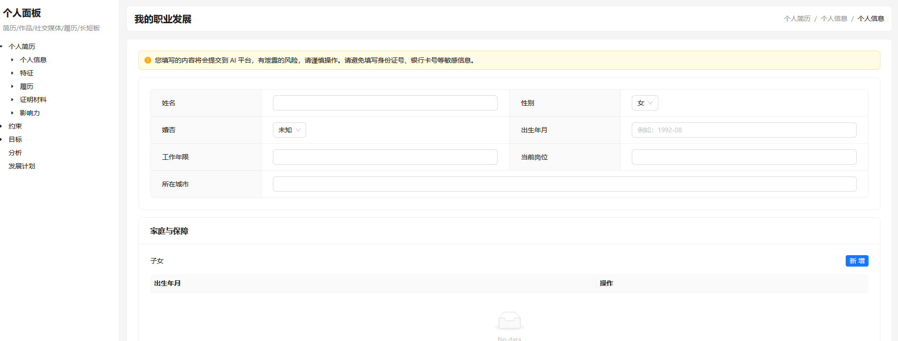

把"找工作/跳槽/转型"拆成可迭代的目标、现状、选项、行动四步闭环， 用结构化数据驱动你的每一步职业决策。

职业规划不是不想做，而是不知道怎么做。这些真实痛点，你中了几个？
投了上百份简历，面试邀约寥寥无几。不知道自己到底哪里不够好，也不知道该往哪个方向努力。
花了大几千考了一堆证书，面试时面试官根本不关心。时间和金钱都打了水漂。
对现状不满，想换个赛道，但不知道目标行业需要什么能力、自己差多少、从哪开始补。
每次面试完就被拒，收到的反馈只有"不太合适"。不知道自己到底哪里答错了、该怎么改进。
正在找工作或考虑跳槽的人，需要明确方向、补齐差距、高效投递。
跨行业或跨岗位转型的人，需要评估风险、规划学习路径、补齐证据链。
即将进入职场的学生，需要从零开始规划职业方向、准备简历和面试。
大多数人做职业规划靠"感觉"和"运气"，Career Grow 用经过验证的 GROW 教练模型，把模糊的想法变成可执行的数据驱动方案。
你自己很难客观评价自己的优劣势。AI 从 16 个维度帮你做全面诊断，找出你自己都没意识到的短板和机会。
分析完了不是扔给你一份报告就结束。系统会生成按周拆解的执行计划，明确每周做什么、产出什么、怎么验收。
补齐了作品、更新了经历后可以重新分析。职业规划不是一锤子买卖，Career Grow 陪你持续迭代、持续成长。
全球顶级企业和商学院都在用的教练模型，Career Grow 把它变成了人人可用的工具。
明确目标
盘点现状
评估选项
落实行动
明确目标岗位、地区、薪资与成功标准，用 SMART 原则自检可行性
结构化沉淀履历、技能、作品与约束条件，用事实说话，不写愿望
输出差距地图与补齐路径，每条建议含成本、产出、风险评估
生成里程碑与周计划，每周复盘迭代，形成执行闭环
不用自己对着空白文档发呆。系统用表单一步步引导你梳理个人经历、技能、作品和约束条件，帮你把脑子里模糊的想法变成清晰的结构化档案。
不只是告诉你"差什么"，而是从目标画像、个人定位、能力差距、简历优化、面试策略、投递方案等 16 个维度给出完整诊断，每条建议都带"为什么、做什么、怎么验收"。
分析完了不是扔给你一份报告就结束。系统会生成按周拆解的里程碑和待办清单，明确每周该做什么、产出什么、达到什么标准，照着做就行。
用图表直观展示你和目标岗位之间的能力差距、薪资差距和技能匹配度，不再靠猜测判断自己的竞争力，数据说话。
补齐了作品、更新了经历后可以重新分析、重新出计划。历史版本自动保存，随时对比自己的成长轨迹，让职业规划真正"活"起来。
所有个人信息、分析结果、执行计划都存在你自己的电脑上，不会上传到任何云端。你的职业规划数据，只有你自己能看到。
不需要任何准备，跟着引导走就行。每一步都有清晰的产出，走完四步你就有一份完整的职业规划方案。
花 15-30 分钟，在引导式表单中录入你的基本信息、工作履历、技能特长、作品成果和生活约束。系统会帮你把零散的信息整理成一份清晰的个人档案。
写下你理想的目标岗位、期望薪资、工作地点和成功标准。系统会用 SMART 原则帮你检验目标是否合理，并给出可行性评估和风险提示。
AI 读取你的全部信息，生成一份 16 维度的深度诊断报告：你现在的竞争力如何、和目标差在哪里、简历该怎么改、面试该怎么准备、该怎么投递。
基于诊断结果，系统生成按周拆解的执行计划：每周该学什么、做什么项目、投多少简历、达到什么里程碑。每周复盘一次，持续迭代优化。
背后是经过数十年验证的 GROW 教练模型，被全球顶级企业和商学院广泛使用。Career Grow 把这套方法论变成了人人可用的工具，让你的每一步都有据可依。
市面上的职业建议大多是"放之四海而皆准"的废话。Career Grow 基于你填入的真实数据做分析，给出的每一条建议都针对你的具体情况，不是模板套话。
大多数职业规划工具止步于"分析报告"。Career Grow 会帮你生成每周行动计划，并内置复盘机制——每周问自己三个问题，确保你真的在往前走，而不是原地踏步。
补齐了新作品、更新了经历后可以随时重新分析。系统会保留你的历史版本，让你清晰看到自己的成长轨迹。职业规划不是一锤子买卖，而是持续迭代的过程。
即使你不打算跳槽，Career Grow 也能帮你在当前公司内部规划发展路径、补齐经历短板、提升竞争力。不跳槽也可以用，而且用完你会更清楚下一步该怎么走。
开源 MIT 协议，不收一分钱。所有数据存在你自己的电脑上，不上传任何服务器，不用担心隐私泄露。你的职业规划，只有你自己知道。
Career Grow 已在 GitHub 开源，MIT 协议，一行命令即可安装使用。